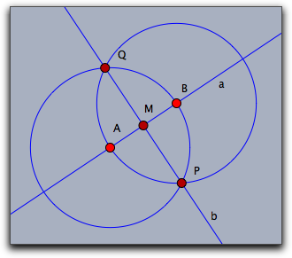
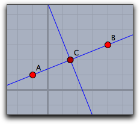

幾何との連携
CindyScript は Cinderella で作図した要素を操作することができます。要素の表示についての情報を得たり、それらを操作することができます。CindyScript で要素を削除したり、新たに作ったりすることもできます。
要素を動かす
CindyScript での計算は、シンデレラの図形の自由要素の位置をコントロールするのに使えます。その一つは、自由要素の位置をはっきりと指定することです。たとえば、Aが自由要素のとき、
A.xy=[1,1] は、その点を座標 [1,1] に設定します。 もう一つの方法は moveto 演算子を使って点を動かすことです。自由要素を動かす: moveto(<geo>,<pos>)
説明: この演算子では <geo> に幾何の自由要素を、<pos> にこれを動かしたい位置を記述します。この演算子によって自由要素の動きをシミュレートします。
<geo> が自由点であれば、 <pos> は2つの数のリスト
[x,y] か３つの数のリスト [x,y,z] です。 前者はユークリッド座標と解釈されます。後者は同次座標と解釈され [x/z,y/z] に点を打ちます。<geo> が自由直線であれば <pos> は３つの数のリスト
[a,b,c] でなければならず、直線 a*x + b*y + c = 0 に設定されます。例: 次のコードは、幾何の要素をどのように動かせるかをまとめたものです。要素のデータに直接アクセスして動かすものも含みます。
//A は自由点 moveto(A,[1,4]); // 点Aをユークリッド座標(1,4)に置く A.xy=[1,4]; // 点Aをユークリッド座標(1,4)に置く A.x=5; // A のx座標を 5 にする。y座標は変化しない A.y=3; // A のy座標を 3 にする。x座標は変化しない moveto(A,[2,3,2]); // A を同次座標 [2,3,2] に置く A.homog=[2,3,2]; // A を同次座標 [2,3,2] に置く //a は自由曲線 moveto(a,[2,3,4]); // a を同次座標 [2,3,4]に置く a.homog=[2,3,4]; // a を同次座標 [2,3,4]に置く //b は傾きつき直線 a.slope=1; // 傾きを 1 にする //C は半径が自由な円 C.radius=1; // 半径を 1 にする
幾何要素のハンドル
動いた要素: mover()
説明: この演算子は、マウスによって今動かされた要素が何であるか(そのハンドル)を返します。
マウスのあるところの要素: elementsatmouse()
説明: この関数は、現在マウスカーソルの近くにある要素のリストを返します。
例: 次のスクリプトはちょっとした意味があります。このスクリプトをMouse Move スロットに置いて実行すると、マウスカーソルの近くにある要素が消えます。マウスカーソルが遠ざかればまた現れます。
apply(allelements(),#.alpha=1); apply(elementsatmouse(),#.alpha=0); repaint();
オブジェクトへのインシデント: incidences(<geo>)
説明: この関数は、幾何要素 <geo> とインシデントなすべての要素のリストを返します。
その名前の要素を取り出す: element(<string>)
説明: この関数は、 <string> の名前の幾何要素を返します。
例:
element 演算子は、要素名が無効であるか、あるいはすでに使われているような場合に使われます。たとえば、i という名前の直線の色にアクセスしようとすると、i は虚数単位の名前として予約されているので、 i.color=1,1,1
と書くことはできません。このような場合、次のように書きます。
element("i").color=[1,1,1]
幾何要素の生成と消去
自由点を作る: createpoint(<string>,<pos>)
説明: この演算子は
<string> をラベルとする点を打ちます。点の位置は <pos> です。すでに同じ名前の点がある場合には新しく作らず、単に指定した位置に移動します。幾何要素を作る: create(<list1>,<string>,>list2>)
説明: この演算子は、任意の幾何要素を作り出します。アルゴリズムがいくつか微妙な点を引き起こしますので、特別な用途に限られます。
第１引数の
<list1>は生成する要素の名前のリストです。第２引数の <string> は幾何学的なアルゴリズムの内部的な名前です。第３引数の <list2> は、定義のために必要なパラメータのリストです。次の表で、いくつかの例を示します。
create(["A"],"FreePoint",[[1,1,1]]); create(["B"],"FreePoint",[[4,3,1]]); create(["a"],"Join",[A,B]); create(["X"],"CircleMP",[A,B]); create(["Y"],"CircleMP",[B,A]); create(["P","Q"],"IntersectionCircleCircle",[X,Y]); create(["b"],"Join",[P,Q]); create(["M"],"Meet",[a,b]);
この一連のコードで、次の図のように幾何要素を作ります。６番目の命令で円の交点を作るとき、２つの点の名前のリストがなければなりません。
 |
幾何要素を作るときの正しいパラメータについては、次に述べる
algorithm と inputs 関数によって得られます。幾何要素の消去: removeelement(<geo>)
説明: 幾何要素を、それに関連するものも含めて消去します。
幾何要素を構成する要素: inputs(<geo>)
説明: この関数は、幾何要素 <geo> を定義するために必要な要素のリストを返します。それらは幾何要素のほか、数やベクトルであるかも知れません。
幾何要素の作図手順: algorithm(<geo>)
説明: この関数は <geo> の作図手順を文字列で返します。
例: 次のスクリプトはすべての要素に対してその作図手順を示します。
els=allelements(); data=apply(els,([[#.name],algorithm(#),inputs(#)]));
垂直二等分線の作図手順が次のように出力されます。:
[[["A"],"FreePoint",[[4,4,-4]]], [["B"],"FreePoint",[[4,-3,1]]], [["a"],"Join",[A,B]], [["C"],"Mid",[A,B]], [["b"],"Orthogonal",[a,C]] ]
 |
要素の属性へのアクセス
色や大きさといった、要素の属性は
.color, .size などのオペレータでアクセスできます。しかし、要素にはたくさんの属性があります。それらにアクセスするには次の関数を用います。すべての属性のリスト: inspect(<geo>)
説明: 幾何要素の属性のリストを返します。
例:
inspect(A) とすると、自由点 A の属性名が次のようにリストアップされます。[name,definition,color,color.red,color.blue,color.green,alpha,visibility, drawtrace,tracelength,traceskip,tracedim,render,isvisible, text.fontfamily,plane,pinning,incidences,labeled,textsize,textbold,textitalics, ptsize,pointborder,printname,point.image, point.image.media,point.image.rotation,freept.pos]
変更可能な属性へのアクセス: inspect(<geo>,<string>)
説明: 変更可能な任意の属性にアクセスします。
例: 点 A の色に、
inspect(A,"color") によってアクセスします。変更可能な属性を設定する: inspect(<geo>,<string>,<data>)
説明: 変更可能な属性の値を設定します。
例: 点 A の色を
inspect(A,"color",(1,1,1)) によって白に設定します。再描画をする: repaint()
説明: この関数は描画している図を強制的に再描画します。これは、スクリプトが図の更新を必要とするときに実行されます。この関数は
draw あるいは move スロットにおいてはいけません。再描画その２: repaint(<real>)
説明:repaint命令を、パラメータで与えられたミリ秒だけ遅らせて実行します。
軌跡上の点: locusdata(<locus>)
説明: この関数は、<locus>によって与えられる軌跡上の点の xy-座標のリストを返します。
Page last modified on Friday 26 of August, 2016 [11:29:35 UTC].
The original document is available at
http://doc.cinderella.de/tiki-index.php?page=Interaction%20with%20GeometryJ